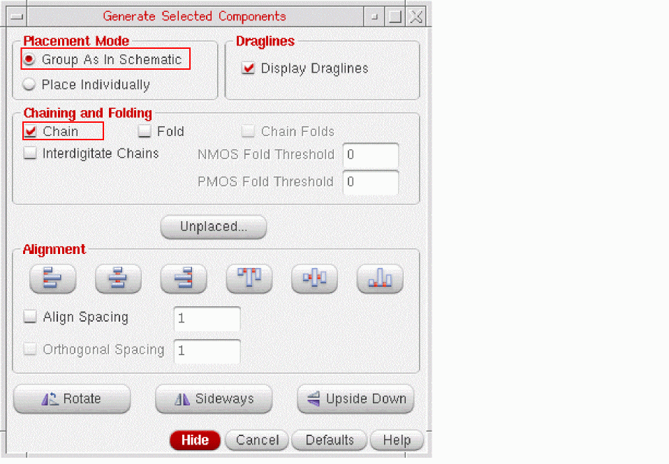
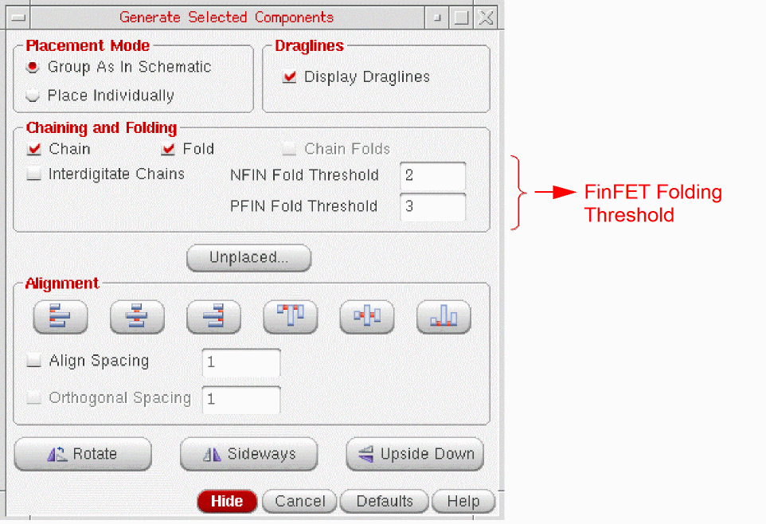
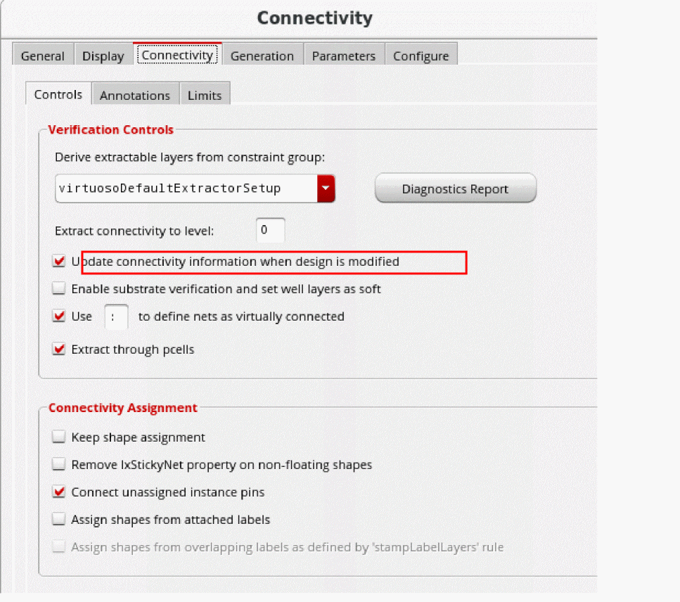
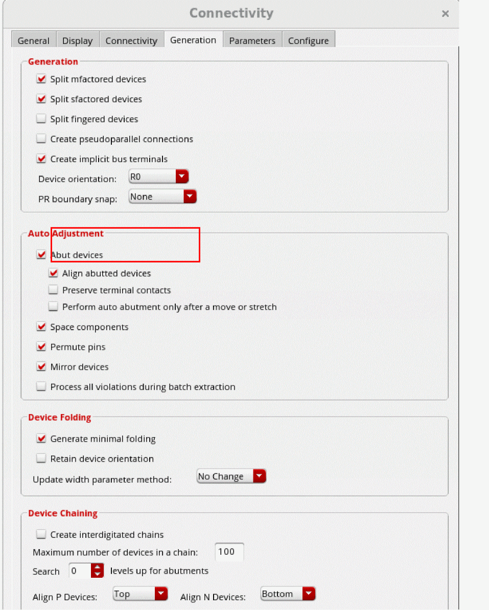

Chaining Devices when Generating Selected From Source
To chain devices automatically during the Generate Selected From Source command:
-
In the Generate Selected Components form, select the Group As In Schematic and Chain options.
The results generated by the chaining engine during this command are affected by the setting for thelxStackPartitionParametersenvironment variable.
If you are using a FinFET design, the chaining and folding threshold fields are displayed as NFIN Fold Threshold and PFIN Fold Threshold, respectively, as shown in the figure below.

Layout XL cannot automatically chain devices in Place Individually mode. To do this, on the Connectivity form:
-
Open the Connectivity tab and choose Update connectivity information when design is modified.
 -
Open the Generation tab and select Abut devices.
 -
From the layout window menu bar, choose Generate Selected From Source.
The Generate Selected Components form appears. -
In the schematic, select the instances you want to place, then click in the layout where you want to place the first and second instances.
The software places the instances where you click in the same order that you selected them. -
Where the flight lines indicate that abutment is possible, place the devices so that the pins overlap.
The devices are chained automatically.
Related Topics
Generate Selected Components Form
Return to top